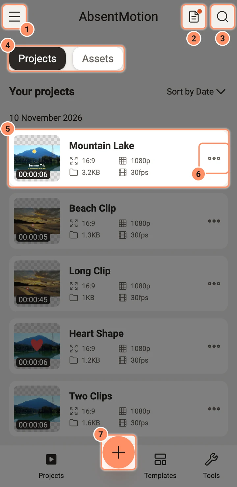
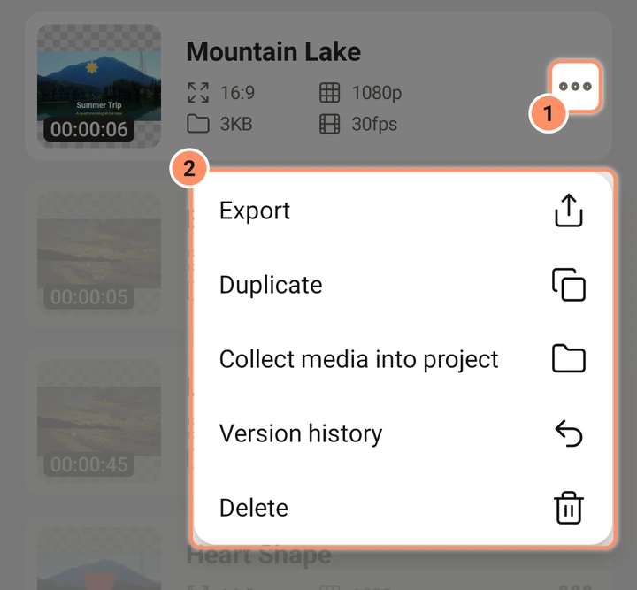
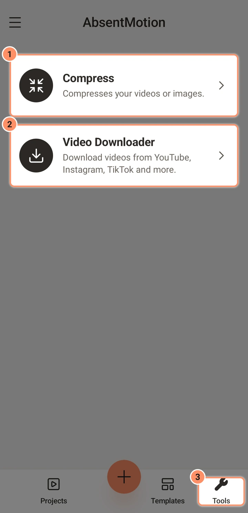
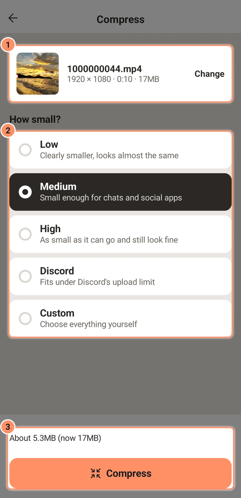
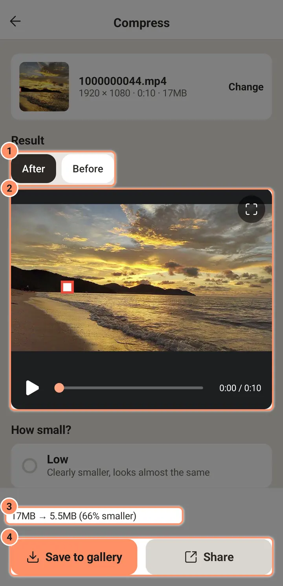
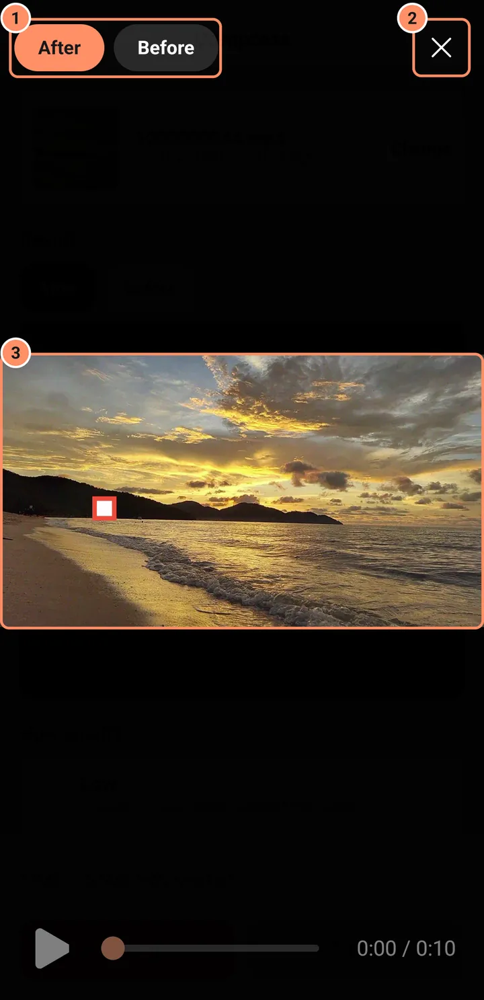
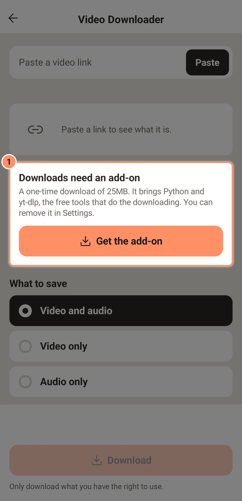
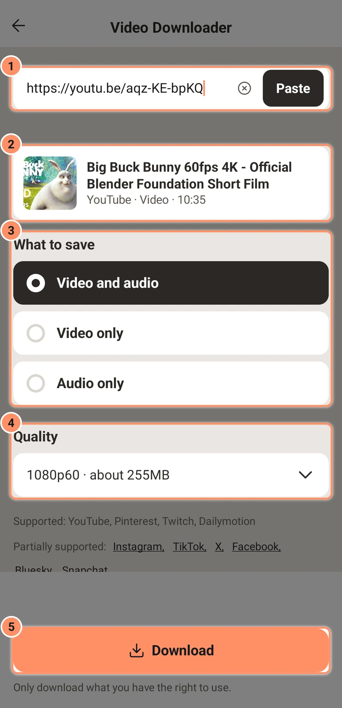
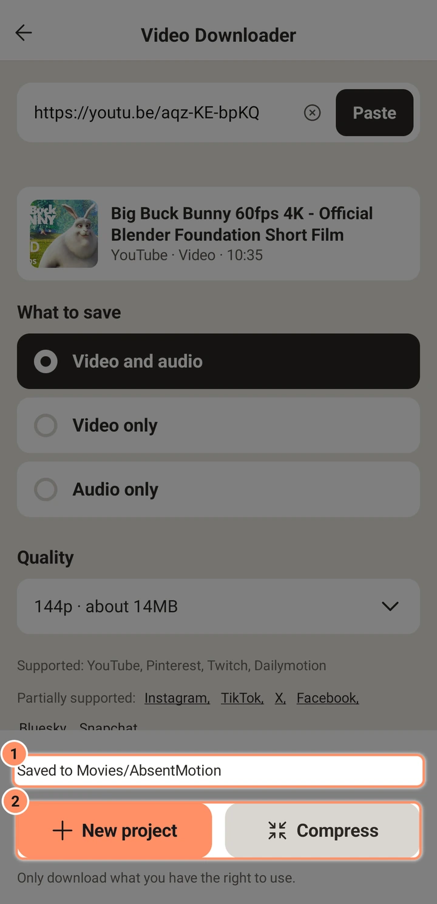

Het startscherm
Je projecten, assets en sjablonen, de tools op het tabblad Tools (Comprimeren, Bijsnijden, Audio extraheren, GIF maken en Videodownloader) en de knoppen eromheen.
Op deze pagina
Het startscherm is het eerste wat je ziet na de eerste start. Het toont je projecten en heeft knoppen om een project te maken, te zoeken en instellingen te wijzigen. Op een tablet met een scherm dat breed genoeg is, wordt de bovenbalk een brede kop en staan projecten en sjablonen in een raster, staand en liggend.

De bovenbalk
- Menuknop (linksboven, drie streepjes). Opent het menu met Instellingen.
- AbsentMotion in het midden.
- Wijzigingen (het notitie-icoon links van Zoeken, of rechts op de pagina Tools). Opent Wat is er nieuw voor jouw versie. Een oranje stip op het icoon betekent dat je deze notities nog niet hebt geopend. Op een tablet en op een computer staat de knop ook links van het zoeken.
- Zoeken (het vergrootglas rechts). Opent een zoekveld. Tijdens het zoeken staat op dezelfde plek een X om het te sluiten. De terugknop sluit het ook.
Wat is er nieuw
Wat is er nieuw toont de nieuwe functies en alle oplossingen van een versie, in secties en groepen. Elke sectiekop laat zien hoeveel wijzigingen erin staan; tik erop om de sectie te openen of te sluiten. Tijdens het scrollen blijven de sectiekop en de naam van de groep bovenaan staan, zodat je een lange sectie overal kunt sluiten. Doorgaan sluit de notities.
De notities openen vanzelf als je de app voor het eerst opent na een update. Wat is er nieuw in Instellingen en de knop op de pagina Over openen ze wanneer je maar wilt.
De onderbalk
- Met Projecten, Community, Sjablonen en Tools wissel je tussen de pagina's van het startscherm. Community toont projecten en voorinstellingen die de community deelt. Tik er een aan om de details te zien, met een knop om het toe te voegen. Wil je zelf iets delen? Tik bovenaan de pagina Community op Formulier openen: upload het bestand naar een willekeurige bestandshost (een anonieme, Google Drive of MEGA) en stuur de link via het formulier.
- De ronde knop + daartussen maakt een nieuw project: zie Een project maken.
Projecten en assets
Bovenaan de pagina Projecten staan twee chips: Projecten en Assets.
- Projecten zijn je video's en animaties. Tik op een kaart om die in de editor te openen.
- Assets zijn herbruikbare onderdelen die je uit een project hebt bewaard of hebt gemaakt met de optie ASSET in het venster voor een nieuw project. Je voegt ze vanuit de editor toe aan andere projecten. Zie Assets, sjablonen en voorinstellingen.
Een project en een asset worden op dezelfde manier opgeslagen; ze staan alleen in aparte lijsten.
Wat een kaart laat zien
Elke kaart heeft een miniatuur met de lengte van het project in de hoek, de naam en twee regels met gegevens: de beeldverhouding (zoals 16:9) en de resolutie (zoals 1080p), en daarna de bestandsgrootte en de framesnelheid. De bestandsgrootte is de grootte van het projectbestand zelf. De foto's, video's en audio die het project gebruikt, tellen niet mee. Een project met uren video kan dus toch maar een paar kilobyte aangeven.
De miniatuur is een stilstaand beeld dat wordt gemaakt als je de editor sluit, op de plek waar de afspeelkop stond. Een project dat je nooit in de editor hebt geopend, kan een lege miniatuur hebben.
Het kaartmenu
De knop met drie puntjes op een kaart (Meer) heeft deze onderdelen. Tik erop om het menu te openen, of houd hem ingedrukt: het menu opent dan onder je vinger, en als je naar een onderdeel schuift en loslaat, wordt dat meteen uitgevoerd.
- Exporteren opent het exportscherm direct vanuit de lijst. De opties voor "Huidig frame" gebruiken het eerste frame. Dit is ook de enige plek met de export XML. Zie Exporteren.
- Dupliceren (Asset dupliceren bij een asset) maakt een kopie met de naam "naam kopie", inclusief de media.
- Media in project verzamelen kopieert elk bestand dat het project van buiten de eigen map gebruikt naar het project, zodat het niet meer afhangt van je galerij. Zie Projecten, back-up en importeren.
- Versiegeschiedenis toont eerdere versies van het project, zodat je naar een daarvan terug kunt.
- Verwijderen (Asset verwijderen) vraagt om bevestiging en verwijdert dan het project, de versies en de mediakopieën die niemand anders gebruikt. Er is geen prullenbak: een verwijderd project krijg je niet terug. Twijfel je, maak dan eerst een back-up.

Is het bestand van een project beschadigd, dan staat er Beschadigd — herstel een versie in plaats van de gegevens. Tik erop om een eerdere versie te herstellen, of verwijder het project.
Meerdere selecteren
Houd een kaart ingedrukt om die te selecteren en tik daarna op andere kaarten om ze toe te voegen of te verwijderen. De balk bovenaan toont hoeveel er geselecteerd zijn, met Alles selecteren, Exporteren, Dupliceren, Naar ander apparaat sturen en Verwijderen. Exporteren en Naar ander apparaat sturen werken op één project tegelijk. Met de X of de terugknop stop je met selecteren.
Zoeken
Eén zoekvak werkt voor het hele startscherm. Op de pagina Projecten zoekt het in de namen van projecten en assets ("Zoek in projecten en assets"); op de pagina Sjablonen zoekt het in sjablonen en voorinstellingen. Hoofdletters en accenten maken niet uit, en elk woord dat je typt moet in de naam voorkomen, in willekeurige volgorde.
Sorteren
Boven de lijsten Projecten en Assets staat Sorteren op datum of Sorteren op naam. Tik erop om te wisselen. Op datum staat het nieuwste bovenaan, gegroepeerd onder datumkoppen. Op naam sorteert van A tot Z. De app onthoudt je keuze.
Sjablonen
De pagina Sjablonen heeft twee chips: Mijn sjablonen en Mijn voorinstellingen. Die worden uitgelegd in Assets, sjablonen en voorinstellingen.
Tools
De pagina Tools heeft kaarten die met bestanden werken, buiten een project om: Comprimeren, Bijsnijden, Audio extraheren, GIF maken, Videodownloader, Afbeelding verbeteren, de importer voor projectlinks en QR-codes, en Verzenden tussen apparaten. Tik op een kaart om die te openen. De schuifregelaarknop rechtsboven opent Tools aanpassen, waar je kiest welke tools je ziet en in welke volgorde, op de pagina Tools en in een project. Op een tablet staan de kaarten naast elkaar en opent een tool op volledig scherm. Houd je de tablet liggend, dan staan de instellingen in een tweede kolom naast het bestand.

Comprimeren
Comprimeren maakt een kleinere kopie van een video of afbeelding, bijvoorbeeld om die in een chat te sturen. Je origineel verandert nooit.
- Tik op Kies een video of afbeelding en kies het bestand in de fotokiezer. Met Wijzigen kies je een ander bestand.
- Kies onder Hoe klein? voor Laag (duidelijk kleiner, ziet er bijna hetzelfde uit), Gemiddeld (de standaard: klein genoeg voor chats en sociale apps), Hoog (zo klein als kan en toch nog goed), Discord of Aangepast. Discord blijft onder de uploadlimiet van Discord en vraagt welke: Gratis (20 MB), Nitro Basic (50 MB) of Nitro (1 GB).
- De regel boven de knop laat zien welke grootte je kunt verwachten, bijvoorbeeld "Ongeveer 12 MB (nu 80 MB)". Er staat ook bij als het bestand al klein is of te lang om onder een limiet te blijven.
- Tik op Comprimeren. Een balk toont de voortgang en Annuleren stopt het. Het scherm blijft aan zolang het bezig is.

Met Aangepast kies je alles zelf:
| Instelling | Keuzes |
|---|---|
| Grootte | Een video: Origineel, 1080p, 720p of 480p. Een afbeelding: Origineel, 2048, 1280 of 800 px |
| Kwaliteit | Beste, Goed, Klein of Kleinst; of Doelbestandsgrootte en typ dan de grootte in MB |
| Framesnelheid | Alleen video's: Origineel, 60, 30 of 24 |
| Geluid | Alleen video's: Uit, Klein, Goed of Beste |
| Formaat | Alleen afbeeldingen: JPEG of WebP |
Als het klaar is, toont de regel boven de knoppen de oude en de nieuwe grootte en hoeveel kleiner het bestand is geworden, bijvoorbeeld "17MB → 5,5MB (66% kleiner)". Is het niet kleiner geworden, dan zegt de app dat en raadt hij aan je origineel te houden. Onder Resultaat wisselen de chips Na en Voor het voorbeeld tussen het nieuwe bestand en het origineel. De knop rechtsboven in het voorbeeld opent een weergave op Volledig scherm met dezelfde twee chips. Tik op Opslaan in galerij om het nieuwe bestand te bewaren (video's gaan naar Movies/AbsentMotion, afbeeldingen naar Pictures/AbsentMotion) of op Delen om het naar een andere app te sturen.


Bijsnijden
Bijsnijden houdt het deel van een video dat je kiest en bewaart het als nieuwe MP4-video. Je origineel verandert nooit.
- Tik op Kies een video.
- Sleep onder Te behouden deel de twee uiteinden over de strook met beelden. Het grote beeld erboven toont het frame bij het uiteinde dat je verschuift. Begin en Einde hebben pijltjes om dat uiteinde een stukje eerder of later te zetten, en Lengte laat zien hoe lang het deel is.
- Kies onder Hoe? voor Snel (de standaard: zonder opnieuw te coderen, dus vlug en zonder kwaliteitsverlies; het begin springt naar het dichtstbijzijnde knippunt van de video) of Exact (knipt precies waar jij kiest, maar duurt langer). Bij Snel springen de pijltjes bij Begin van het ene knippunt naar het volgende.
- De regel boven de knop laat zien welke grootte je kunt verwachten. Tik op Bijsnijden.
Heeft een video bijna geen knippunten, dan kan Snel alleen bij het begin starten, en het scherm meldt dat. Kies Exact om overal te kunnen beginnen.
Audio extraheren
Audio extraheren bewaart het geluid van een video als audiobestand.
- Tik op Kies een video. Bij een video zonder geluid staat er "Deze video heeft geen geluid."
- Formaat: M4A (de standaard) of MP3.
- Kwaliteit: Klein, Goed of Beste. Bij M4A is er ook Origineel: dat kopieert het geluid zoals het is, zonder verlies, als het geluid van de video dat toelaat. De app kiest het dan voor je.
- De regel boven de knop laat zien welke grootte en lengte je kunt verwachten. Tik op Extraheren.
Wil je het geluid uit een video binnen een project halen? Gebruik dan Audio extraheren in het laagmenu: zie Audio.
GIF maken
GIF maken maakt van een deel van een video een geanimeerde GIF.
- Tik op Kies een video.
- Kies onder Te behouden deel het deel, net als bij Bijsnijden. Een GIF kan maximaal 30 seconden lang zijn.
- Grootte is de lange zijde van de GIF: 320, 480 (de standaard) of 720 px. Framesnelheid: 10, 15 (de standaard) of 24. Herhalen: Eindeloos (de standaard) of Eén keer.
- De regel boven de knop laat zien welke grootte en hoeveel frames je kunt verwachten, gemeten op een paar voorbeeldframes. Wordt de GIF groter dan 25 MB, dan staat er "Deze GIF wordt groot. Probeer een kleiner formaat of een korter deel." Tik op GIF maken.
Het resultaat van Bijsnijden, Audio extraheren en GIF maken
Een balk toont de voortgang en Annuleren stopt het. Als het klaar is, toont de regel boven de knoppen de grootte van het nieuwe bestand, en Resultaat laat het zien (bij geluid zie je de naam). Tik op Opslaan om het te bewaren, of op Delen om het naar een andere app te sturen. Video's gaan naar Movies/AbsentMotion, GIF's naar Pictures/AbsentMotion en geluiden naar Music/AbsentMotion. Gaat er iets mis, dan zegt de regel wat er gebeurde, bijvoorbeeld "Dit is te groot voor deze telefoon. Probeer een kleiner formaat of een korter deel."
Videodownloader
De Videodownloader bewaart een video via een link op je telefoon. Daarvoor is een gratis add-on nodig, een eenmalige download waarvan het scherm de grootte toont (ongeveer 25 MB). De add-on bevat de opensourcetools Python en yt-dlp, en je kunt hem weer verwijderen in Instellingen met Add-on voor videodownloader verwijderen. Hij werkt op telefoons met een 64-bits processor.

- Tik de eerste keer op Add-on downloaden op de kaart met "Voor downloads is een add-on nodig".
- Kopieer in een andere app de link van een video en tik dan op Plakken (of typ de link in het veld; de X wist hem). De app controleert de link en toont de titel, een klein plaatje en wat het is, bijvoorbeeld "YouTube · Video · 10:35".
- Kies onder Wat opslaan voor Video en audio, Alleen video of Alleen audio.
- Kies onder Kwaliteit een van de kwaliteiten van de video. Bij elke kwaliteit staat de grootte, bijvoorbeeld "1080p60 · ongeveer 255MB". Bij een post met alleen afbeeldingen valt niets te kiezen: de afbeeldingen worden bewaard zoals ze zijn.
- Tik op Downloaden. Als het klaar is, zegt de melding waar het bestand staat, bijvoorbeeld "Opgeslagen in Movies/AbsentMotion", en verschijnen er twee knoppen: Nieuw project opent een nieuw project met de video erin, en Comprimeren opent de tool Comprimeren met het bestand.


Onder de knop toont Ondersteund de sites die werken, en Deels ondersteund de sites die met beperkingen werken. Tik daar op een naam om de beperking te lezen, bijvoorbeeld dat je voor Instagram-story's en privéposts een ingelogd account nodig hebt, zodat ze niet te downloaden zijn. Kan een link niet worden gedownload, dan zie je de reden: een privé- of verwijderde video, een post waarvoor je moet inloggen, een playlist, een site die de download blokkeert of geen verbinding.
Download alleen wat je mag gebruiken: het scherm herhaalt dit onder de knop.
De Videodownloader zit nog niet in de computerversie, en ook niet in de Intel- of AMD-bestanden voor Chromebooks.
Een projectbestand importeren
Standaard heeft het startscherm geen importknop. Je kunt een projectbestand openen vanuit een andere app (een bestandsbeheerder, een bericht) met Delen of Openen met, en de app neemt het over. Wil je liever een knop? Zet dan Importkaart tonen in de projectlijst aan in Instellingen. Bovenaan de lijst Projecten verschijnt dan een kaart met Bestand kiezen. Zie Projecten, back-up en importeren.
Als er iets misgaat
- Is de app onverwacht gesloten, dan zie je bij de volgende start AbsentMotion is onverwacht gesloten met de reden. Waren er niet-opgeslagen wijzigingen, dan kun je die herstellen.
- Crashlogs vind je in Instellingen onder Crashlogs.
- Heb je een oude versie, dan kan de app je vertellen dat er een nieuwere is: zie Instellingen.